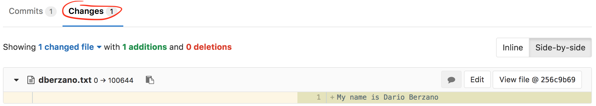

Collaborating with Pull Requests¶
Learning Objectives
Collaborate to Git repositories by proposing changes
Understand what a Pull (or Merge) Request is
Use GitLab discussion and review tools to converge on a proposed change
In this lesson we are going to learn how the distributed nature of Git comes in handy when working on larger projects. We will also see how this approach turns out to be useful even when working on small projects with only three or four contributors.
The most naive approach to Git collaboration is what we have previously seen:
We have a single remote repository
This repository has one or more owners who decide who can contribute
Contributors can push their changes directly on the repository
GitHub has introduced the concept of Pull Requests, which has been subsequently adopted by its most famous clone, GitLab.
What is a Pull (or Merge) Request¶
Pull Requests are a way to propose changes to a remote repository without having write permissions to it, and therefore without pushing to it directly. Note that GitLab (which we are going to use for the following examples) uses the term “Merge Requests” but the concept stays the same.
The general idea behind Pull Requests is:
I would like to collaborate to a repository by adding some code
I push this code somewhere
I submit this code for a review to the owners of the original project (this is where I open a Pull Request)
Owners will decide whether to accept or reject my changes, and a Web-based interface allows people to comment and discuss
Why are they called Pull Requests?
We have seen in a previous lesson that the act of
incorporating remote changes into a repository is called “pulling” and it is
achieved by variations of the command git pull.
Projects using Pull Requests do not allow people to git push code to them.
Instead, what you are doing is requesting them to pull your code instead,
therefore the name.
Pull Requests are not a builtin Git feature
The concept of Pull Requests leverages certain features of Git, but it’s not
part of the git tool itself: it depends on the hosting platform you use.
Fork the original project repository¶
The first step when collaborating to a project is to create a fork of the remote repository. Let’s see exactly what it means with an example.
Connect to our example repository using a Web browser:
https://gitlab.cern.ch/starter-kit-scratch/starter-kit-example
and click on the “Fork” button:

If you have played already with GitLab groups you might have several fork destinations, if so, just select your user:

Your GitLab account will now contain a repository with the same name as the
original, starter-kit-example.
At this point, CERN GitLab contains several copies of the same repositories: the main one, and all the forks you have just created. Those copies are remote clones for now, as they are not on your laptop yet.
The main feature of your fork is that you (and by default you only) have write permissions to it. You cannot directly push to the original repository, but you can write to your fork.
Forks are independent
When you create a fork, you make a snapshot of the original repository at a given moment in time. From that point on, the fork is independent from both the original repository and any forks made by other users.
Clone a remote project and its fork¶
Now it is time to open your terminal and clone the remote project. As we have already seen we can use the SSH URL for cloning the project:
$ mkdir test_merge_requests/
$ cd test_merge_requests/
$ git clone ssh://git@gitlab.cern.ch:7999/starter-kit-scratch/starter-kit-example.git
Cloning into 'starter-kit-example'...
remote: Counting objects: 3, done.
remote: Compressing objects: 100% (2/2), done.
remote: Total 3 (delta 0), reused 0 (delta 0)
Receiving objects: 100% (3/3), done.
Now putting into practice what we have already learnt let’s add
our fork as a remote, it will have the same URL as the main repository except
starter-kit-scratch is replaced with your CERN username:
cd starter-kit-example/
git remote add YOUR_CERN_USERNAME ssh://git@gitlab.cern.ch:7999/YOUR_CERN_USERNAME/starter-kit-example.git
What are my remotes now?
How many remotes do you have now in your repository?
What are their names?
Solution
You can verify what are your remotes by using the git remote command:
$ git remote -v
dberzano ssh://git@gitlab.cern.ch:7999/dberzano/starter-kit-example.git (fetch)
dberzano ssh://git@gitlab.cern.ch:7999/dberzano/starter-kit-example.git (push)
origin ssh://git@gitlab.cern.ch:7999/starter-kit-scratch/starter-kit-example.git (fetch)
origin ssh://git@gitlab.cern.ch:7999/starter-kit-scratch/starter-kit-example.git (push)
You now have two remotes: the default one, corresponding to the upstream
repository, is called origin and you have added it when you have cloned the
repository. The second one is named after your CERN account and you have created
it explicitly with git remote add.
Sync your local repository with remote changes¶
You are now ready to start working on your new feature on your laptop. First off
since you are using different remotes, make sure your local Git working
directory is up-to-date with the upstream (i.e. the “main”, or origin)
repository.
If you don’t have any pending local change, you can do:
$ git pull
Since your current branch “tracks” by default the corresponding remote branch
on the main (origin) repository, the git pull command will by default do the
right thing. This is equivalent of explicitly telling git to fetch changes
from origin:
$ git pull origin
Syncing using the nuclear option
In some cases you might end up with your working directory (and/or branch)
“messed up” and the git pull command will not work seamlessly. If you are sure
you are not going to lose anything important, you can simply reset your current
working directory by ignoring any local modification and destroying it:
$ git fetch --all # make local git aware of what changed remotely
$ git reset --hard origin/master # lose any local modification
$ git clean -fxd # get rid of any extra files not under version control
You should be very careful about using the git reset and git clean
commands, but they are very useful when your working area got messed up somehow.
Implement your new feature¶
You can now implement your new “feature” by adding a bunch of files with some random content to your local repository. As an exercise, you can try to add a file named after your CERN username:
echo "My name is Firstname Lastname" > YOUR_CERN_USERNAME.txt
Replace YOUR_CERN_USERNAME with your CERN username to avoid conflicts.
You can now commit the changes:
$ git add --all -v
$ git commit -m 'Add user info for YOUR_CERN_USERNAME'
What have I done?
What did you do with
git add?What did you do with
git commit?Why is the commit message appropriate?
Where are my changes now?
Solution
git add --all adds all untracked/modified files to the “staging area”, that
is: the area containing the files which will be part of the next commit. The
-v (as in verbose) switch is useful to spot unwanted additions, as it
prints out every added file.
git commit creates a commit, whose message is appropriate as it is shorter than
50 characters and meaningful, in other words it’s concise.
Your commit is only on your laptop only and it is not yet available in your fork, or on the upstream repository.
Push changes¶
Without further ado let’s push:
$ git push
Unfortunately it does not work (your message might actually be different):
Counting objects: 3, done.
Delta compression using up to 8 threads.
Compressing objects: 100% (2/2), done.
Writing objects: 100% (3/3), 316 bytes | 316.00 KiB/s, done.
Total 3 (delta 0), reused 0 (delta 0)
remote: GitLab: You are not allowed to push code to protected branches on this project.
To ssh://gitlab.cern.ch:7999/starter-kit-scratch/starter-kit-example.git
! [remote rejected] master -> master (pre-receive hook declined)
error: failed to push some refs to 'ssh://git@gitlab.cern.ch:7999/starter-kit-scratch/starter-kit-example.git'
By default, git push attempts to push to origin, which is forbidden in this
case! All modifications must go through Pull Requests. This means the only way
we have is to push our changes to our own fork:
$ git push YOUR_CERN_USERNAME
This time we have had more luck:
Counting objects: 3, done.
Delta compression using up to 8 threads.
Compressing objects: 100% (2/2), done.
Writing objects: 100% (3/3), 316 bytes | 316.00 KiB/s, done.
Total 3 (delta 0), reused 0 (delta 0)
To ssh://gitlab.cern.ch:7999/dberzano/starter-kit-example.git
764051d..256c9b6 master -> master
OK, so your changes are now pushed to your private repository. Before opening the Pull Request let’s check the status of the remote repositories.
Status of remote repositories
How do you use git log to see exactly what the two remote repositories
(origin, and your fork) contain?
Solution
We use the --decorate option to show local and remote branches and tags (-10
is to limit the history to 10 commits):
$ git log -10 --oneline --graph --decorate
This is the output (most recent commits are on top):
* 256c9b6 (HEAD -> master, dberzano/master) Add user info for dberzano
* 764051d (origin/master, origin/HEAD) Add initial README
So you will see that:
the main repository (
origin/master) is behind yoursyour local repository (
master) and your remote fork (dberzano/master) are in sync and contain the commit you’ve just authored
Create a Pull (or Merge) Request¶
As we have said before, Pull Requests are not part of Git but they depend on the provider hosting your Git repositories. On GitLab you need to point your Web browser to your repository:
https://gitlab.cern.ch/YOUR_CERN_USERNAME/starter-kit-example
Then click on the + (plus) button and select New merge request:

On the next screen, select master as Source branch:
then click the green Compare branches and continue button. The next screen allows you to review the changes graphically (you need to go at the bottom of the page and click the Changes tab):

If the changes look good to you, assign a title to your Merge Request, and an extended description. You should follow the same policies you use for writing commit messages:
keep the Title below 50 characters (well, you don’t need to count, but do your best to keep it short!),
add any extra information in the Description field.
Automatic Pull Request title and description
If your Pull Request has only one commit, the Title and Description fields will be automatically filled for you.

When you are ready to proceed, click on the big green Submit merge request button.
Now, sit back and relax!
Discussing, amending, retiring a Merge Request¶
Once a Merge Request is opened the repository owners are notified (usually via email), and they (or even somebody else, depending on the repository’s permissions) can add comments and requests before accepting your changes.
Merge Requests are each given a sequential number. The first ever merge request on the example respository can be found at:
https://gitlab.cern.ch/starter-kit-scratch/starter-kit-example/merge_requests/1
This is how a comment appears, and how you can reply to it:

When you are ready just click on the Comment button.
In our example, we have realized that we wanted to add something more to the Merge Request before proceeding. Doing so is as simple as authoring and pushing more commits.
Let’s go back to our local working directory, edit the file
YOUR_CERN_USERNAME.txt and add a line to it:
$ echo "I hereby certify that this information is true." >> YOUR_CERN_USERNAME.txt
Now commit:
$ git commit -a -m 'Add information certification'
[master d09c134] Add information certification
1 file changed, 1 insertion(+)
…and finally push (once again, remember to do it to your remote):
$ git push YOUR_CERN_USERNAME
Counting objects: 3, done.
Delta compression using up to 8 threads.
Compressing objects: 100% (3/3), done.
Writing objects: 100% (3/3), 359 bytes | 359.00 KiB/s, done.
Total 3 (delta 0), reused 0 (delta 0)
To ssh://gitlab.cern.ch:7999/dberzano/starter-kit-example.git
256c9b6..d09c134 master -> master
Voilà, it’s done: you have just added more commits to your Merge Request! Let’s look on the Web at the commits you have added. Go to the Merge Request page and click on the Commits tab at the bottom, here is a direct link for the example:
https://gitlab.cern.ch/starter-kit-scratch/starter-kit-example/merge_requests/1/commits

How come has this worked?
Opening a Merge/Pull Request does not mean creating a static snapshot of your
working area at the time when you have opened it; instead, your working area
(i.e. your branch on your remote, note that we are only using one branch
called master, which is the default, for simplicity) is dynamically linked to
the Merge Request. The link disappears the moment the Merge Request is closed,
or accepted.
Adding commits to an existing Merge Request is the very essence of using Merge Requests: you submit your content for scrutiny, and reviewers will say what they think before accepting it, giving you the ability to amend things as you go.
If you or the maintainers of the project are not happy with a Pull Request it can be retired by clicking on the orange Close merge request button on top of the page:
Accepting a Pull Request¶
When a Merge Request looks good, the repository owners will click on the Merge button:

Your code is then finally included upstream. On your local repository, if you want to work on a new feature, you can simply start over by fetching remote changes first as explained earlier.
The social side of coding¶
Using Pull Requests can seem overly complicated at first, but they are a very efficient way to truly collaborate on large projects.
A Pull Request represents an atomic unit of work. You can open a Pull Request for adding a certain feature, composed by several commits with work in progresses, minor fixes, major bug fixes. When merged, the feature is finally there and complete, available to every collaborator. You reduce the chance of having incomplete and/or buggy features in released versions of the code.
When writing a Pull Request, you know that your code will be viewed by someone. This makes you more attentive to what other persons will think when they see it, making you a better collaborator.
Sometimes, good code is like wine (it has to age a little bit to taste better). Pull Requests might stay open for a while before being accepted, do not be in a rush: having your code reviewed (sometimes by the most annoying and pickiest reviewer!) is a chance for improvement.
Behave on Pull Request discussions
Some Pull Requests on large projects can get rather controversial. Bear in mind that Pull Requests are about facilitating collaboration for a common goal, and - as in real life - try not to go on a rampage, at least not too quickly!
Automatic testing¶
Merge requests can be configured to prevent changes from being merged into the
main branch of a repository if any of the project’s builds or tests fail to run
correctly. This is useful to try and ensure that the master branch always
contains a “good” version of the project. See the continuous integration
lesson for details on how to set this up with GitLab, along with a list of
services that can be used with other git hosts.
Key Points
“Forking” means to create your private editable copy of a remote project on the servers
“Cloning” means to download locally a remote repository and/or its fork
“Pull/Merge Requests” allow for discussing code and content before including it
Automatic testing on Pull/Merge Requests ensures better upstream code quality
{% right %} CC BY 4.0 - Original content {% endright %}